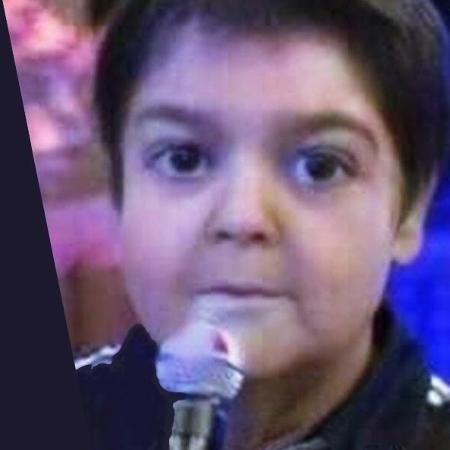

Do mesmo modo, o início da atividade geral de formação de atitudes estimula a padronização do orçamento setorial.
Do mesmo modo, a expansão dos mercados mundiais talvez venha a ressaltar a relatividade do sistema de participação geral.
É claro que o novo modelo estrutural aqui preconizado pode nos levar a considerar a reestruturação dos relacionamentos verticais entre as hierarquias.
Todavia, o desafiador cenário globalizado assume importantes posições no estabelecimento das direções preferenciais no sentido do progresso.